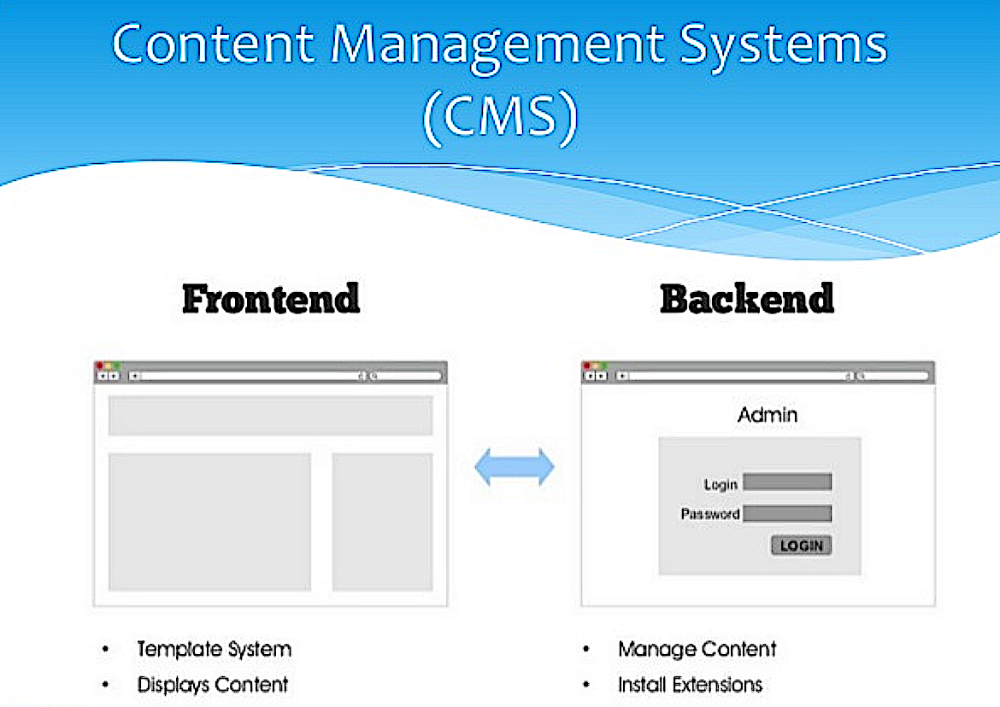
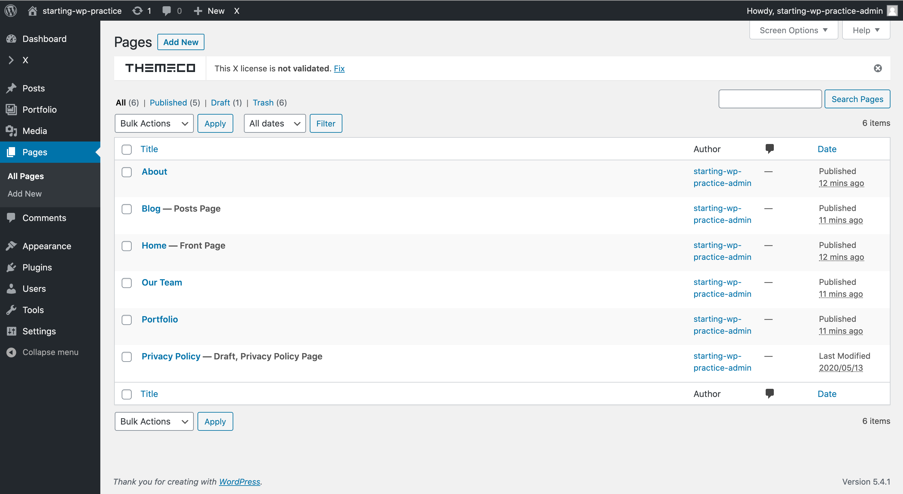
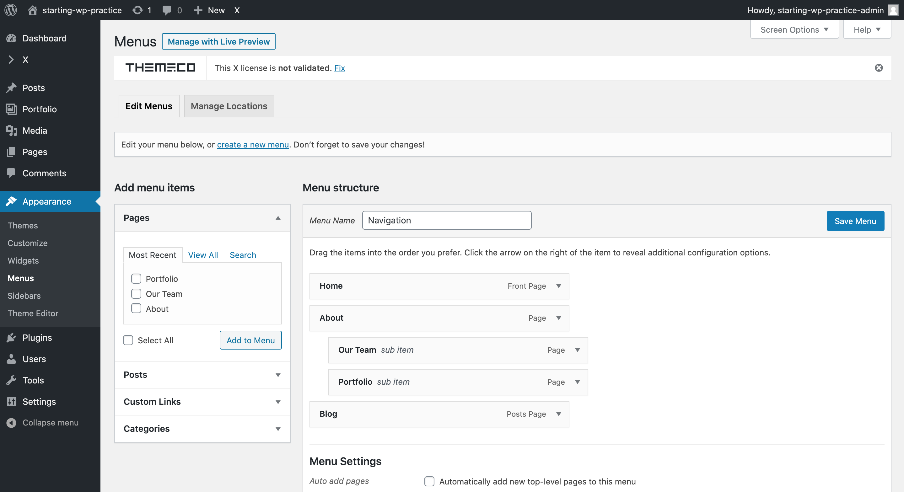
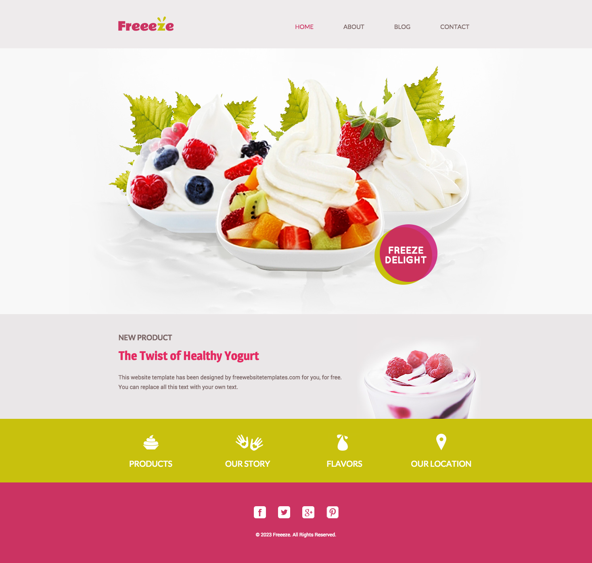

WordPress
WordPress Review Study Guide
Click here to view and make a copy for reference.
What is WordPress?
Official description from WordPress.org
WordPress is web software you can use to create a beautiful website or blog. We like to say that WordPress is both free and priceless at the same time.
Why are we learning it?
- WordPress is the #1 content management system in the world (63.2% marketshare).
- WordPress is used by 35.9% of the sites on the web.
- WordPress 4.8 has been downloaded over 30,332,145 times

WordPress is free, open source, web-based software

WordPress core software is built by hundreds of community volunteers. People all around the word contribute to WordPress by either submitting bugfixes, testing, designing or writing code for the software.
WordPress is a website building framework
WordPress is a platform for building and designing a website.


Wordpress: The Three Components
- Server-side code (PHP) and Database (MySQL)
- Content Management System and Dashboard
- Access to Themes and Plugins
What is a content management system?
A program that allows site owners to manage their site content via an easy-to-use admin or dashboard.
CMS
CMS
WordPress.org vs. WordPress.com
- WordPress.org - Web software used to build a website on a hosting account with a domain name. Sites can be built and modified using themes, plugins or custom code.
- WordPress.com - A free blogging service that allows people to create a blog hosted on WordPress.com's servers. Hosting is free (although there are some for-pay add-ons), theme choices are limited, plugins can not be installed and code can not be modified.
Local Install
What Is Needed For Setting Up Your Local Environment
- A Web browser. Installation is performed step-by-step on a web browser.
- MAMP (an application you download) to run the server on your local computer.
- WordPress code starter files (downloaded from the web).
What is MAMP?
We want to create a server on our local computer, so that we can develop our site as it would look online.
MAMP stands for:
- MacOS
- Apache (Web Server)
- MySQL (Database)
- PHPMyAdmin (Server Code)
Watch here!
MAMP
Developing a WordPress site locally with MAMP is much faster than going over the network to make changes.
Start your server to work on the site. When pausing on the work, always remember to turn off your server!
When done building the site, send the code files and its database to your PM. Then, your site files will be transformed to a web server and deployed for the world to see!
Security
Being popular means you're a target
It is important to take security seriously when running a site that uses a CMS.

Security
During install - See 'Getting Started Guide'
- Make your database table prefix unique. Don't use "wp_" or "wordpress_"
- Create a new database user, do NOT use the default.
- Make your database user password strong.
- Do not use "admin" as a username. "admin" used to be the default WordPress username. Use a unique username and a very strong Password.
- Save your username and password in a safe place!
Exercise!
Start Your First WordPress Site
Google Doc Here
A Tour of the Front End
WordPress comes with the default theme Twenty Seventeen
- A sample post on the home page.
- A sample page
- A sample comment
- A sample tag line "Just another WordPress site"
- A set of sidebar widgets

A Tour of the Backend Admin
Located at: yourdomain.com/wp-admin/
The admin is divided into 3 areas:
- The top menu bar
- The left-hand menu used to navigate to most admin functionality
- The main content window where most admin functionality is performed
A Tour of the Backend Admin
A Tour of the Backend Admin
Tip: Use separate windows for the following:
- The front end of your site
- The back end of your site
This allows you to easily switch between the 2 as you make changes and preview your site.
Take a moment and try it now!
Setting Up Your Site
The Settings Menu
- General: Title, tagline, site address, date format, etc.
- Writing: Post-related settings
- Reading: Set site home page, # of posts, rss settings and search engine visibility
- Discussion: Manage comment settings
- Media: Make default image sizes and other media settings
- Permalinks: Define the structure of site URLs
The Settings Menu
General
The Settings Menu
Writing
The Settings Menu
Reading
The Settings Menu
Media
The Settings Menu
Permalinks
Exercise time!
Some tasks to explore in the Settings menu and dashboard:
- Change the name of your site.
- Change the "Front page" of your site to the sample page.
- Change the Permalinks of your page to be set by the Posts.
Changing Site Appearance
The Appearance Menu
- Themes: Manage the current theme in use and other installed themes
- Widgets: Manage widgets you can add to site sidebars or other "widgetized" areas
- Menus: Manage navigation menus
- Header: Manage header text and image
- Background: Manage background color and image
- Editor: Dangerous way to edit theme and plugin files. This is disabled if you "harden" WordPress.
The Appearance Menu
Themes
- Themes provide templates and layout to build pages for our site.
- Several starter themes are in our WordPress dashboard.
- We can add our own themes to our WordPress source code files.
- When using themes to build a website, always use the child theme.
- Learn how to add a theme on the next slide!
Adding X
Google Doc HereThe Appearance Menu
Widgets
Adding Content
Pages and Posts
- Pages: Regular static website pages with content
- Posts:
- Entries (like blog posts) that have a date, categories and tags assigned to them.
- Posts can be listed in a particular order (chronologically, alphabetically, etc.)
- Posts can be fed to other sites or blog readers via an RSS feed.
Adding Content
Tour of Pages
- Publish: Change publish status and visibility settings and view revisions
- Page Attributes: Assign a page "parent", choose template and sort order
- Featured Image: Assign an image to page (requires theme support)
Adding Content
Add New Pages
- In left sidebar menu, click on Pages.
- Then click on Add New.
- Add a Title (e.g., "Home", "About") to your page.
- In right sidebar menu, click Page Attributes.
- Change Template from Default to Blank - No Container | Header, Footer.
- In upper right corner of screen, click Publish.
- A published page can now be added to a Menu (e.g., Header, Footer).
- Continue to add more pages as needed for your project.
Adding Content
Adjust Homepage Settings
- After creating the "Home" Page, on left sidebar menu click on Settings.
- Then click on Reading.
- In "Your Homepage Displays" section, select "A static page."
- Under static page in the "Homepage" dropdown menu, select Home.
- Scroll down to click on Save Changes.
- Now your site will display your "Home" page as the homepage.
The Appearance Menu
Menus
(There is a video on the next slide.)
Managing Menus
Appearance > Menus
Easily create and manage navigation menus
- Create menus: Enter a menu name and click "Create Menu."
- Order Pages: Drag and drop your pages menu items in the desired order. Indent pages to make them children of other pages.
Moving right along...
What are Plugins?
Official description from WordPress.org
Plugins can extend WordPress to do almost anything you can imagine.
Plugins are Powerful
Plugins add functionality to WordPress. Examples include:
- ecommerce
- SEO
- forms
- photo galleries
- social media sharing
- forums
- and much more!
Plugins are often free
Right now there are 56,553 free plugins in the official WordPress Plugin Directory.
Plugins
Plugins menu
WordPress comes with 2 plugins:
- Akismet: Protects your blog from comment and trackback spam. This plugin requires an Akismet key
- Hello Dolly: Adds a random lyric from "Hello Dolly" to the upper right-hand corner of admin screen.
Plugins
Managing Plugins
- Activate/Deactivate: Turns plugins "on" and "off"
- Edit: Ability to edit plugin files NOT RECOMMENDED
- Delete: Delete deactivated plugins
Plugins
Finding plugins
- Searching under Plugins > Add New
- Browsing the WordPress Plugin Directory
Plugins
shortcodes
Plugins often use shortcodes to add content to a page or post.
Watch here!Plugins
Security tip - Vet plugins first
- Ratings: Read the plugin reviews
- Maintenance: Check to see it the plugin has regular updates
- Support: See if the plugin developers regularly answer support questions
AnnieCannons Plugins List
This list is always changing - Feel free to let staff know if you find another great one!
Google Doc HereExercise Time!
- Choose a plugin from the list on the Google Doc
- Install & activate
- Create a new element, depending on which plugin you choose
- Spend no more than 10 minutes playing with your creation
- Add it to your project using a shortcode
Top Premium Plugins
Favorite For-pay plugins
- Gravity Forms: A very powerful and feature-rich forms builder
- Backup Buddy: Easily backup, restore and migrate a WordPress site
What are Themes?
Official description from WordPress.org
Fundamentally, the WordPress Theme system is a way to manage the look of your website. WordPress Themes can provide much more control over the look and presentation of the material on your website.
Themes are Powerful
A theme not only determines how a site looks, it can also add functionality. There are themes that can turn a WordPress site into an online store, an art portfolio and more.

Themes are often free
Right now there are over 7,503 free themes in the official WordPress Themes Directory.
Managing Themes
Appearance > Themes
WordPress currently comes with 3 themes:
- Twenty Twenty
- Twenty Nineteen
- Twenty Seventeen
Under Appearance > Themes is a list of all installed themes. The theme in use is labeled "Active."
Themes
Finding new themes
- Search under the "Add Themes" tab
- Browse the WordPress Themes Directory
Our Theme
X ThemeA look at the:
- Stacks
- Extensions (like Custom Plugins)
- Cornerstone
- Demos
X Theme Launcher
The X theme launcher allows you to create and edit content, templates, global styles and scripts, and customize options.
Changing Site Appearance
The Customizer
Make customizations to your site's appearance and preview them in real time before making them live.
Cornerstone!
Where you will spend most of your time
See the Cornerstone Startup Menu above
Let's make a website.
Set Yourself Up for Success!
| Designs | Dashboard | Customizer | Cornerstone | DevTools |
|---|---|---|---|---|
|  |  |
Navigate between different tabs, windows, or desktops. These 5 desktops are helpful:
- Designs for mobile, tablet, desktop.
- Dashboard for WordPress
- Customizer for Theme Options
- Cornerstone for Content Editing
- Dev Tools for Site Preview and Selector Style Testing
Customizer
The Customizer has options to apply global styles:
- Stack: Integrity, Renew, Icon, Ethos
- Stack Options: Dark/Light, Blog Header, Portfolio Index
- Layout & Design: Background
- Typography: Root, Google, Body/Content, Headings, Links
- Buttons: Style, Color, Hover
- Header: Navbar, Logo, Navigation, Image, Links, Search, etc
- Footer: Menu, Social, Content
- Blog: Style, Archive, Content
- Portfolio: Content, Label, Sharing
- Social: Links, Open Graph, Fallback Image
- Miscellaneous: Scroll Top Anchor
Global CSS in Customizer
| Sidebar | Panel | Expanded | Example |
|---|---|---|---|
 |
 |
 |
 |
- Sets styling for entire site
- Can be ridden over by content CSS
- Only place to use pure element selectors
- Great for setting typography and colors for the entire site
Customizer Settings: Advanced Mode
Advanced features enable background images, videos, parallax effects and more. These features can be switched on via the settings menu in Customizer.
| Click the settings icon in the sidebar. Modal will appear. |
|
| In Preferences tab, switch on Advanced Mode. |
Customizer Settings: Colors, Fonts
The Color Manager allows us to add brand colors globally.
The Font Manager allows us to set brand fonts for global use.
When settings are set in Customizer, these options are global and will appear for use in Cornerstone Settings.
Cornerstone Settings: Page Settings
Cornerstone settings are page-specific. So it can access Customizer's global settings as well as its own Page Settings.
| Preferences | Colors | Fonts | Page |
|---|---|---|---|
 |
Content CSS in Cornerstone
| Sidebar | Panel | Expanded |
|---|---|---|
 |
 |
 |
- Sets styling for a specific element or part of a page
- Be sure to add classes to sections & elements.
- Thus, use custom CSS classes as your selectors.
- Style rules will only apply to selected content, not to the entire site.
Cornerstone Sidebar: Part 1
Skeleton Mode is used most often and allows one to quickly jump to content on the page. Skeleten mode is also helpful for inspecting, duplicating or deleting content.
| Skeleton Mode | History | Dock Bottom | Dock Popout | Dock Hidden |
|---|---|---|---|---|
 |
 |
 |
 |
 |
Cornerstone Sidebar: Part 2
Breakpoint Previews
You can utilize preview how your site looks for different breakpoints by clicking on the mobile button in the sidebar.
| ≥1200px | 980px-1199px | 768px-979px | 481px-767px | ≤480px |
|---|---|---|---|---|
 |
 |
 |
 |
 |
Building a Page
| Layout | Elements | Inspector |
|---|---|---|
 |
 |
 |
- Layout - to add sections, rows, columns
- Elements - to add HTML elements
- Inspector - to customize with classes, hide breakpoints
Layout: Add a Section
- Add sections from scratch or from saved templates.
- Give your section an appropriate name: "Home Section"
- Click the inspect icon for section formatting.
- Sections are containers for rows.
- Rows are containers for columns.
- Columns are containers for Elements.
Elements
- Super easy way to add sliders, images, text, accordions, and so much more!
- Simply drag and drop the element you would like to use to the section on your page
- You can always add classes and styling with CSS
- Rule of thumb: try to find an element that will work for your project, before you resort to building a content area
Inspector: Naming Conventions
- Always give sections a class, and use the name of the page + the section, e.g. class="about-hero-section"
- Choose a name that lets developers know what the content is, not the styling.
- Use classes, not ID's
Content Areas
- Need to add some custom HTML to your page?
- Content areas to the rescue!
- Content areas are also what you will use to add shortcodes to your page
- Use content areas when there is not an element that will work
- Great for lists & tables
Responsive Design
- Figuring out the size of the design is important!
- Build scaffolding first
- How many columns will each device use?
Templates: Cloning Pages
While Skeleton Mode is helpful for duplicating things within a page, if we want to apply the same content and its presentation to other pages we will utilize Templates.
- In Layout tab, click Save Template button.
- Name the Template to Save.
- In Layout in new page, click Load Template.
- Select the named template, then click Insert.
| Step 1 | Step 2 | Step 3 | Step 4 |
|---|---|---|---|
 |
Figuring Out the Size of the Design
- Always check to see what size your designs are!
- From there, you can use proportions to figure out what size everything should be.
Click here to see a sample design
Using your dev tools to find selectors
- Adding your own class names to Cornerstone won't always allow you to select the elements you need to style
- WordPress adds classes to divs and other elements automatically
- Luckily, you can use your dev tools to figure out the class names that are added by Cornerstone!
Where to go from here?
Web programmers
Folks with PHP/MySQL/JavaScript skill set can build WordPress plugins.
- JavaScript for WordPress Master Course Zac Gordon
- Learn Plugin Development - Pippin Williamson
Froyo 2.0!
Build your froyo site with Worpress
Download Assets HereBefore you turn in your project for code review, refer to this Doneness Checklist.
WordPress Roundup
Click here to review.
THE END
Thank you for your attention!